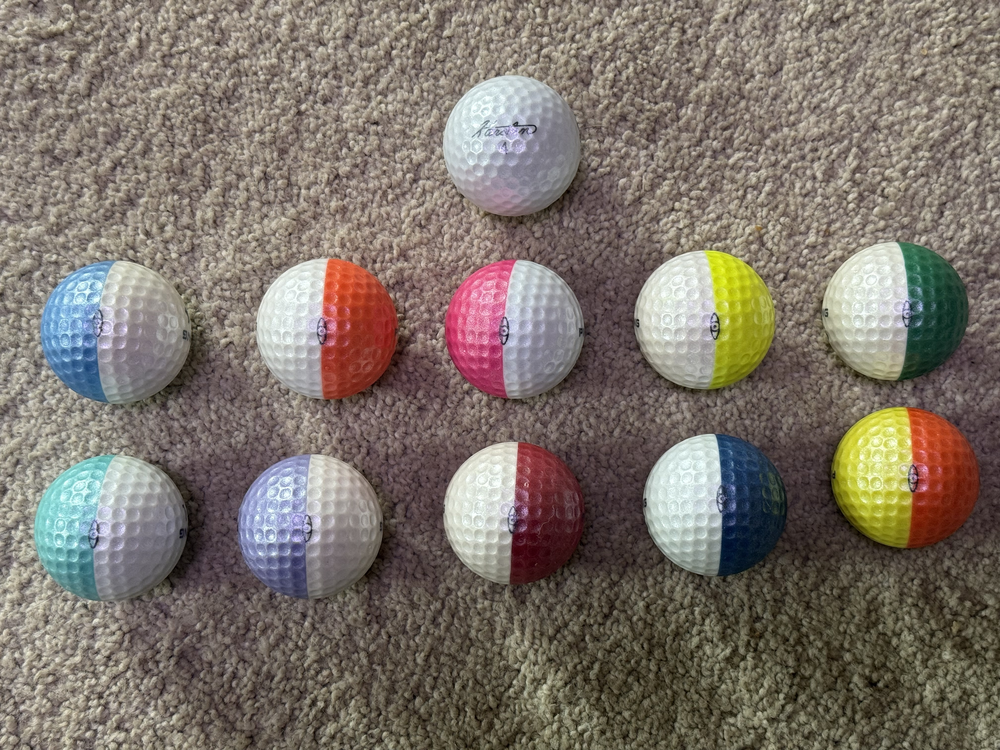

Solheim's Hand-Painted Test Balls
Allen Solheim painted test balls over a period of years in the 1980's. He painted the opposite side of Ping promotional balls using new potential color combinations for Karsten's review. Some of the colors were accepted while other color combinations were not accepted.
The balls appeared again in 2013 when one of Allen's friend's grandson met with him about the balls after his grandfather passed away.
Allen had given his golf partners a few dozen of his initial sample test balls years ago. He painted around ten or eleven different colors. Twelve test balls of each color combination.
After the meeting, Allen and a friend began a search for additional test balls. An additional thirty-one new color combinations were found. He recovered some of the balls in Norway with relatives and some in California. (He had made three test balls for each of these thirty-one additional balls.)
For the first eleven original balls, he painted twelve samples of each color. For the additional thirty plus balls, he painted three test samples of each color over the years.
All proceeds, received from the sale of the balls, were over $75,000, which he donated to the Phoenix Children's Hospital.

Karsten's 85th Birthday Gift
The balls pictured here are a combined effort of Karsten's wife, Louise, and their three sons, Allen, John, Louis, and daughter Sandra in 1996.
Karsten's favorite ball was the Karsten CT374 so they planned to run some of those in Pearl, which was his favorite colored ball. With 5 people being involved with the project it got bigger than originally planned. They still had the Ping Eye line, but hadn't used it in years. They decided to run the first 10 color combinations of the initial balls made. The plan was to make the balls and add a mixture of pearl. They also decided to add metallic to the mixture.
The balls made for Karsten's birthday were family only balls from 1996 until 2018. Then three sets of the balls were sold to Allen's collector friends with proceeds being matched by him and donated to the Phoenix Children's Hospital.
The bedrock principles that took Karsten Solheim from shoe repairman to engineer to dramatically successful entrepreneur and allowed him to live the American dream remain valuable for any student of life and business:
- Put God first in your life.
- A man's responsibility is to provide for his family.
- If you are the right kind of person, there's no reason why you shouldn't be happy. Happiness depends on you.
- Know who you are, what you want, and where you're going — and communicate it.
- Manage by walking around.
- If workers know the boss personally and are free to call him by his first name, they will be happier, healthier employees.
- While salaries necessarily vary, pay bonuses to everyone equally. They all work hard and are equally important to the company.
- Never abide shortcuts, shoddy work, or bargain hunting at the expense of the final product.
- Never discount. Never mass market. Rather, manufacture product at the highest level possible and trust the discriminating buyer to rise to the appropriate price.
- People will pay for quality products made with quality materials by skilled workmen.
- The customer who likes your product and sees its benefits will be willing to pay for it.
- Aim toward customers who buy on the basis of quality, not price.
- There are plenty of so-called bargains out there.
- The only real bargain is quality at a fair price.
- Worry more about your own plans and dreams than about what the competition is up to. If you have a quality product, there will be room in the market for it.
- Keep very limited inventories of finished product. Manufacture only custom-ordered merchandise.
- Always do your best on every piece you work on.
- Don't let one piece on which you could have done a better job go to the customer.
- Never ignore a ringing phone.
- Always stay busy. There's always something to do. Never sit around.
- There is not an engineering or design problem that cannot be solved, and there is not a discipline or sport that cannot be mastered.
Excerpt from Karsten's Way by Tracy Sumner — ©2000 by the Solheim Foundation